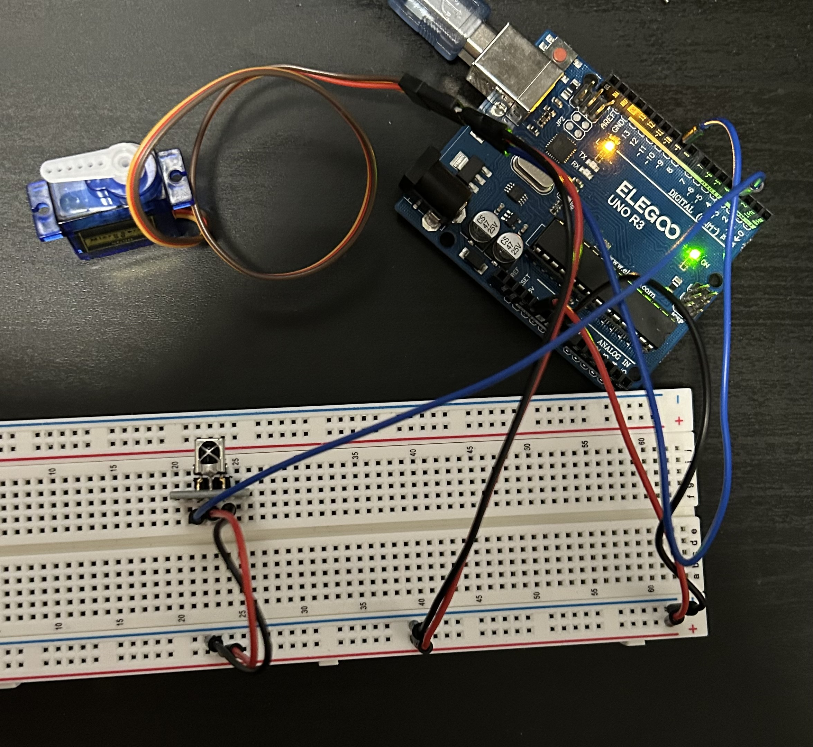

# include // Imports library for servomotor.
# include // Imports library for IR remote.
Servo servo; // defines our servomotor.
IRrecv remote(3); // Initializes IR reciever as digital pin 3.
int servoPin = 9; // Pin 9 set to 'servoPin'
bool isMoving = false; // Servomotor is off initially.
int pos = 0; // Initializes servomotor position.
int stepSize = 2; // Servomotor set to move 2 degrees each iteration.
void setup() {
// put your setup code here, to run once:
servo.attach(servoPin); // Attaches servomotor to pin 9
remote.enableIRIn(); // enables IR receiver to read signals.
Serial.begin(9600); // initializes serial communication at 9600 bits per sec.
}
void loop() {
// If signal is received it is printed to serial monitor.
if (remote.decode()) {
Serial.println(remote.decodedIRData.decodedRawData, HEX);
// If Volume Down button is pressed servomotor turns off.
if(remote.decodedIRData.decodedRawData == 0XEA15FF00) {
isMoving = false;
}
// If Volume Up button is pressed servomotor turns on.
if(remote.decodedIRData.decodedRawData == 0XB946FF00) {
isMoving = true;
}
remote.resume(); // Reenables IR signal reception.
}
// Servomotor oscillates between 0 and 180 degrees by stepsize.
if (isMoving) {
pos += stepSize;
if (pos >= 180 || pos <= 0) {
stepSize = -stepSize;
}
servo.write(pos); // servo motor is set to new position.
delay(5); // delay so servomotor can move smoothly.
} else {
servo.write(0); // Servomotor repositions and turns off.
}
}